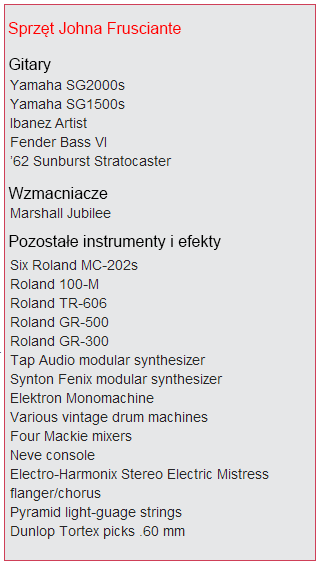
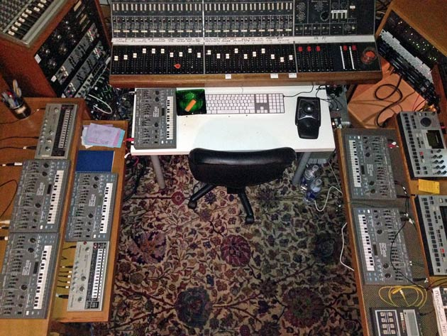
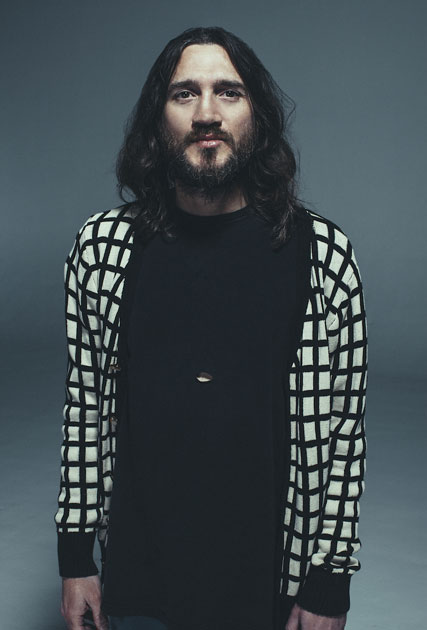
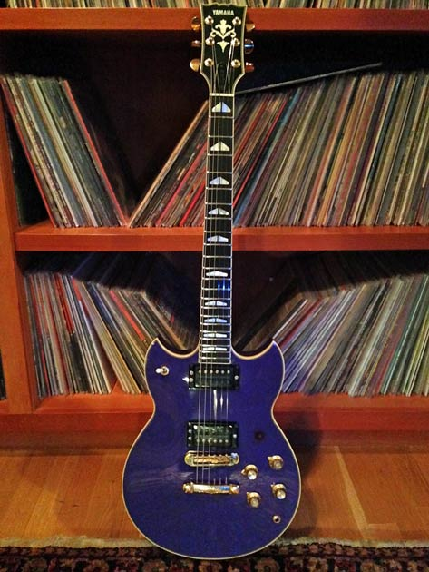

W umyśle Johna Frusciante rozgrywa się bitwa. Jego muzyczny świat to świat przeciwieństw i gatunkowych mariaży, gdzie to, co tradycyjne splata się z tym, co odlotowe, a matematyczne równania w jakiś sposób łączą się z ekspresją uczuć. Gitara zawsze będzie bazowym instrumentem byłego członka RHCP, ale jego najnowsza broń z wyboru to muzyczne maszyny. „Roland MC-202s [syntezator z wczesnych lat 80.] jest jednym z moich ulubionych instrumentów, „ – mówi. „To samo dotyczy automatów perkusyjnych, samplerów, komputerów i innych syntezatorów.”
Dla Frusciante największą zaletą tych instrumentów jest to, że jeśli raz nauczysz się nimi posługiwać, możesz z miejsca tworzyć dźwięki wszystkich rodzajów instrumentów. Frusciante ma w zasadzie sześć MC-202s, których używa w różnych kombinacjach, by przekładać partie gitarowe na partie syntezatorowe. Korzystając z kilku urządzeń, może przetwarzać każdą gitarową strunę za pomocą jednego z nich i w ten sposób udoskonalać w nieskończoność brzmienie każdej ze strun.
„W tej chwili jestem tak samo biegły w programowaniu, jak w graniu na gitarze.”- mówi. „Od kiedy nauczyłem się tego języka i zintegrowałem go z moimi naturalnymi skłonnościami jako muzyka, czasami czuję się jakbym był dowódcą na wojnie. Jakby coś się spierdoliło, a ja powinienem to naprawić. Jakby były dwie skłócone ze sobą strony, z których jedna musi wygrać, a druga musi przegrać. Jedna musi być schwytana i zniewolona przez tę drugą. W jakiś sposób jest to podobne do grania w wojenną grę komputerową. Czytam książki o takich sprawach jak wojna, bo przypominają mi sposób w jaki myślę, gdy tworzę muzykę.”
Frusciante podkreśla fakt, że programowane instrumenty są „posłuszne mózgowi” – najważniejszemu instrumentowi kompozytora. Twierdzi, że dzięki nim czuje, że nie ma fizycznych przeszkód pomiędzy muzyką w jego wyobraźni, a dźwiękami, które tworzy. Opowiada, że w równym stopniu inspirują go klasyczni XX-wieczni kompozytorzy, tacy jak Igor Strawiński i Iannis Xenakis, jak i współcześni elektroniczni eksperymentatorzy, np. Tom „Squarepusher” Jenkinson, który jest jednocześnie wirtuozem klasycznej gitary basowej i mistrzem programowania.
Frusciante przyznaje, że zaraził się muzyką elektroniczną kiedy stworzył Speed Dealer Moms, eksperymentalną „acid housową” grupę wraz ze swoimi przyjaciółmi: Aaronem Funkiem i Chrisem McDonaldem. Sześć lat później nagrał „Enclosure” swój jedenasty solowy album, który w dużej mierze opiera się na programowaniu. Opisuje go jako osobisty muzyczny przełom, małżeństwo zawiłych gitarowych kompozycji ze znajomością elektroniki, którą zdobył tworząc poprzednie albumy „Empyrean” i „PBX Funicular Intaglio Zone”.
„To wspaniałe czasy by być muzykiem.” – mówi kreatywny Frusciante. Wyjaśnia Premier Guitar dlaczego czuje się tak pewnie jako twórca i szczerze opisuje swój aktualny sposób tworzenia muzyki.
Czy możesz opowiedzieć jak zakochałeś się w gitarze i dlaczego chciałeś grać?
Kiedy byłem małym dzieckiem wydawało mi się to oczywiste, że jeśli nauczę się grać na instrumencie będę w stanie grać muzykę, którą słyszę w swojej głowie, a której nigdy nie słyszałem w realnym świecie. Rodzice nie chcieli mi kupić elektrycznej gitary, ale mimo to zacząłem grać, gdy miałem 7 lat, choć gitara akustyczna wydawała mi się nudna – to nie był dźwięk, który chciałem usłyszeć. W końcu dopiąłem swego i dostałem gitarę elektryczną, gdy miałem 12 lat. Gdy byłem dzieciakiem w Santa Monica Led Zeppelin i Kiss to było coś. Słuchałem Jimmy`ego Page`a i zastanawiałem się jak to możliwe by ludzkimi rękami wydobywać takie dźwięki. Gitara zawsze była dla mnie ważna ze względu na dźwięk, nie na fizyczność. Fizyczność to po prostu rzecz pomiędzy wyobraźnią, a dźwiękiem, który płynie z instrumentu.

Czy wszystkie instrumenty mają według Ciebie taką samą ekspresję? Czy gitara jest tym szczególnym narzędziem?
Gitara pozwala mi w najlepszy sposób analizować muzykę innych ludzi. Odkąd zacząłem grać, prawdopodobnie spędziłem więcej czasu ucząc się grać z płyt niż robiąc cokolwiek innego w życiu. Robienie tego przynosi tak wiele korzyści – między innymi zdolność rozpatrywania muzyki w kategoriach intelektualnych. Nie tylko słuchania tego, co lubisz i co sprawia ci przyjemność, ale analizowania i zaglądania do głów ludziom, którzy tę muzykę nagrali lub napisali. Lubię uczyć się wszystkich partii w utworze muzycznym, dzięki temu naprawdę wiem dlaczego czuję to, co czuję w najlepszy możliwy sposób w jaki mój umysł jest w stanie to pojąć. Lubię grać jedną partię, ale jednocześnie być zdolnym do wyobrażania sobie jednocześnie wszystkich pozostałych i rozmyślać o ich związkach w kategoriach interwałów i rytmu.
W notce, którą dołączyłeś do do EP „Outsides”, napisałeś „Muzyka rockowa to muzyka elektroniczna.” Co miałeś na myśli?
Tradycyjni muzycy mają takie uprzedzenie, że jeśli ktoś nie wykonuje fizycznie czegoś, co jesteś w stanie zobaczyć, wtedy nie jest pełnoprawnym muzykiem. To dowód ich ignorancji. W XV, XVI, XVII czy XVIII wieku na samym szczycie muzycznej hierarchii byli kompozytorzy. Oni nie robili nieczego na co ludzie mogli się gapić – tworzyli muzykę w swoich umysłach i mieli narzędzia by ją tworzyć – najpotężniejszym z nich był zapis nutowy. Rolą instrumentalistów było spełnianie zachcianek kompozytorów. Nie mieli takiej pozycji jak dzisiejsi gitarowi soliści. Znakomity skrzypek był kimś, kto wykonywał muzykę wielkich kompozytorów i jeśli wyróżniał się na przykład szczególnie ekspresyjną techniką gry, mógł koncertować lub coś w tym stylu. Tradycyjni muzycy zagubili się w swoim myśleniu o tym, że fizyczna strona instrumentu ma jakąś wewnętrzną wartość sama w sobie.
Jesteś bardzo sprawnym technicznie gitarzystą – ale czy powiedziałbyś że grasz raczej instynktownie?
Kiedy dorastałem miałem nauczyciela gry na gitarze który powiedział mi, że nie jestem dobrym gitarzystą, ponieważ nie potrafiłem grać każdego dźwięku w skali bardzo szybko. Myślę, że takie podejście jest błędne. Po pierwsze nie sądzę, że granie każdej nuty brzmi dobrze. Wiem z pracy nad cięciem sampli, że na początku każdej nuty jest dźwięk uderzenia w strunę i że trwa on całkiem długo. Jeśli grasz każdą nutę i grasz bardzo szybko, brzmi to jakby grał Yngwie Malmstein. Kocham jego grę, ale granie każdej nuty nie brzmi najwspanialej, bo słyszysz więcej uderzenia kostki niż nuty. Allan Holdsworth nie gra wszystkich nut, co uważam za bardziej ekspresyjny sposób szybkiego grania. Jest w nim więcej tonalnego zróżnicowania. Więcej przestrzeni na ekspresję. W latach 80. gitarzyści myśleli, że skoro ktoś gra czysto, bardzo szybko i robi dużo efektownych trików, to czyni go dobrym gitarzystą. W tym wszystkim pogubiło się trochę granie na gitarze. To nie tak, że uczenie się i ćwiczenie nie przynosi korzyści gitarzyście – bo przynosi! Ale główny cel to widzieć instrument wyraźnie w swojej głowie, tworzyć piękną muzykę i coś wyrażać swoją grą.
Pamiętam kiedy postanowiłem zmienić swoje podejście i kierować się własnym sercem; Słuchałem solówki w „Sympathy for the Devil” Rolling Stones i pomyślałem „To jest świetna gra na gitarze”. W żaden sposób coś, co zagra Steve Vai nie jest lepsze tylko z tego powodu, że robi to efektowniej lub ma silniejsze muskuły. Ta muzyka z tej gitary jest tak dobra, jak tylko muzyka może być. „Marquee Moon” grupy Television wywarło na mnie podobne wrażenie. Oni nie byli szczególnie mocnymi gitarzystami, ale ta płyta jest bardzo gitarowa. Jest tam mnóstwo solówek i piękna muzyka. Zdałem sobie sprawę, że nie muszę tak kombinować z moją grą i nie musze starać się wywierać wrażenia na słuchaczach, że to nie powinny być kluczowe elementy mojej gry i występów. To powód dla którego zagrałem tak jak zagrałem na „Blood Sugar Sex Magic” i na moim pierwszym solowym albumie. Szczególnie starałem się nie robić wrażenia swoją grą, ale raczej pokazać związek między moją wyobraźnią, a instrumentem.

W środku domowego studia Johna, gdzie powstawało Enclosure.
Jaka była koncepcja doboru piosenek na „Enclosure”?
Moim celem nie było pokazanie piosenek, ale użycie ich jako narzędzia do wyrażenia siebie dźwiękiem i rytmem, z bębnami jako podstawowym instrumentem – ważniejszym niż melodie. To poważna zmiana, która miała miejsce w ciągu ostatnich 30 lat tworzenia muzyki elektronicznej. Bębny trafiły na szczyt muzycznej hierarchii i typowe zmiany akordów i inne elementy przestały być konieczne, by robić muzykę. W pewien sposób poszedłem dalej niż mógłbym pójść, gdybym nie miał jako bazy piosenki. Na przykład to, co zrobiłem tnąc jazzowe solówki perkusyjne, tworząc brzmienia bębnów zbieżne z pewnymi akcentami w piosence i rozbieżne z innymi. Nigdy nie słyszałem nikogo, kto poszedłby tak daleko w samplowaniu i montowaniu arytmicznych bębnów.
Tak jak w „Crowded”?
O tak! Jestem szczególnie dumny z tego kawałka. Czuję, że osiągnąłem w nim szczyt moich możliwości.
Niektóre z tych bębnów brzmią jak grane na żywo, ale chyba nie są?
Nie są, to pocięte perkusyjne bity, bierzesz nagranie czegoś w rodzaju słynnego „amen break`a” i tniesz je na tak wiele kawałków, jak się da. To tak, jakbyś ciął taśmę, tylko jesteś w stanie ciąć znacznie bardziej precyzyjnie. Rearanżacja kolejności, zmiana szybkości i brzmienia – to obszar ekspresji równoważny całkowicie grze na instrumencie. Kompozytorzy nigdy nie mieli możliwości tak drobiazgowego tworzenia rytmu. Ludzie montujący taśmy z nagraniami nie mogli tego zrobić z taką rytmiczną precyzją. To niesamowite móc to zrobić! Boże, gdybym wiedział jak to zrobić, gdy byłem nastolatkiem, byłbym taki szczęśliwy!
Ale to prawdopodobnie nie jest takie łatwe do opanowania dla każdego. Wygląda na złożony proces.
To jest tak samo trudne jak wszystko inne: ćwiczysz przez 5 lat i przestaje ci sprawiać trudność. Twój mózg zaczynie łapać groove. Dla tradycyjnego muzyka groove to coś, co czujesz, a nie coś nad czym się zastanawiasz. Chłopie, nawet sobie nie zdajesz sprawy jaka to mordęga, gdy jedni ludzie próbują uczyć innych jak mieć lepszy groove – to jakbyś próbował wytłumaczyć coś, nie znając potrzebnych do opisania tego słów. Ja mam rodzaj swojej własnej liczbowej teorii z której nigdy nie przestałem się uczyć. Tak jak zawsze będą rzeczy do zrozumienia z płyt przy pomocy mojej gitary, tak samo zawsze będą zawsze będą rzeczy, których mogę się nauczyć w kwestii groove`u, programowania i bycia absolutnie pewnym stopnia „rozbieżności”. To jest właśnie groove: przesunięcie czasu w różnym stopniu oraz przesunięcie w różnym stopni akcentów i elementów nieakcentowanych w utworze. To po prostu masa rzeczy do badania.
Mówiąc o przesunięciu czasowym – masz dar budowania napięcia – jak wtedy, gdy śpiewasz na przekór tempu własnych piosenek. Jakie masz do tego podejście?
W przypadku Enclosure wokale zostały nagrane zanim skończyliśmy nagrywać instrumenty. Zaczynałem tworzenie piosenki od programowania naprawdę prostego rytmu na automacie perkusyjnym – na tyle, by wystarczył jako baza do gry na gitarze i śpiewu. To mogło być problematyczne, bo normalnie ludzie śpiewają tak, by dopasować się do atmosfery utworu. Jeśli mają tylko gitarę i prosty rytm perkusyjny obawiają się śpiewać bardzo śmiało. Nauczyłem się jak tego unikać. Pierwsze wokalne podejście, które słyszysz na płycie to ja dający z siebie wszystko.
Nowy styl
John Frusciante jest nakręcony projektem, który właśnie stworzył z Black Knights, hip-
„Odkryłem nowy typ zespołu czy współpracy,” – mówi Frusciante. „To prawdziwa przyjemność i czuję się tak swobodnie, jakbym pracował sam. Oczywiście kłócimy się cały czas, ale te spory dotyczą muzyki.”
Pierwszy album trylogii, „Medieval Chamber” pojawił się w styczniu. Według Crisisa pokazuje on jak poznawali siebie jako muzycy, ale dopiero drugi w kolei album, ‘The Almighty” (ukaże się latem tego roku), pozwolił temu trio rozwinąć swoje możliwości.
„John jest tak muzycznie przegięty,” – opowiada Crisis. „Uczę się czegoś o muzyce za każdym razem, gdy się spotykamy. To jak rapowanie z całym zespołem. Wszystkie jego bity mają feeling, a to jest coś, czego teraz brakuje w hip-hopie. No i bardzo łatwo złapać ich sens.”
Frusciante jest producentem, gra na gitarze i sampluje własne wokale. Crisis mówi: „John cudownie łączy bity. Nagrywa sesje, czyści je, daje im uczucie, tworzy z nich własny świat. Wspaniale gra na gitarze. Pięknie śpiewa. Cokolwiek nam proponuje, przyjmujemy to w całości!”
Na tym albumie mimo wszystko jest bardzo duzo gitarowego grania. Czy korzystasz z gitary rytmicznej, by stworzyć podstawę dla partii pozostałych instrumentów?
Tak nagrywałem gitarę jako bazę dla reszty, ale potem myślałem czysto w kategoriach brzmienia kompozycji i próbowałem uciec od początkowej koncepcji.
Jak powstały gitarowe partie w „Cinch”? to praktycznie sześciominutowe gitarowe solo.
Byłem zainteresowany tym, by nauczyć się patrzec na gitarę w taki sposób, w jaki grający na pianinie patrzy na klawiaturę. Pewne rzeczy, które przychodzą naturalnie keyboardzistom, nie przychodzą naturalnie gitarzystom. Odwracanie akordów jest bardzo łatwe na pianinie, bo nuty wyglądają tak samo w każdym rejestrze. Tymczasem na gitarze musisz pracować w różnych pozycjach na różnych częściach gryfu. Na przykład jednym z moich ulubionych muzyków jest Tony Banks, klawiszowiec Genesis. Kochałem jego muzykę przez całe życie, ale nie byłem w stanie stworzyć takiej progresji akordów, jaką umieścił na „The Lamb Lies Down On Broadway” i „Foxtrot”. Było to dla mnie tajemnicą, bo choć czułem głęboki emocjonalny związek z tą muzyką, nie byłem w stanie nauczyć się grać jej na gitarze. Po prostu nie byłem w stanie napisać takiej kompozycji! A to po prostu chodziło o umiejętność szybkiej modulacji, przechodzenia z jednego klawisza czy stylu do innego w gąszczu progresji akordów.
Ciągle tworzyłem progresje składające się z tych samych siedmiu dźwięków, np. Am-C-G-F-Em. Gdy zaczniesz grać w D-dur, coś się zmienia – F nagle staje się F#. To może być kłopotliwe, gdy grasz solo, łatwo jest popełnić błąd i zrobić z siebie idiotę.
Jedną z zasad, które przyjąłem, było nie kierować się niskimi strunami określając to, w jakim kluczu się znajduję, np. „H-moll, czyli 7. próg; G-moll, czyli 3. próg.” W utworach typu „Cinch”, modulacja pojawia się na prawie każdym akordzie. Ale to, że zmienia się moje centrum tonacji nie znaczy, że muszę przenieść się na inny próg. Gdy byłem członkiem Red Hot Chili Peppers, grałem solówki opierając się na bardzo prostych zmianach akordów, więc nie musiałem zmieniać kluczy. Teraz robię na odwrót.

Główne wiosło Johna — Yamaha SG2000— którą używał podczas nagrywania Enclosure.
Jakich gitar używałeś na „Enclosure”?
Moje główne gitary to YamahaSG2000s. Moja ulubiona to purpurowa, z 1980 roku. Mam też kilka innych i kilka SG1500s. Przerzuciłem się ze Strata na Yamahy pod koniec 2010 roku. W ciągu ostatnich trzech lat grałem na Stracie raz i tylko przy okazji jednego krótkiego nagrania.
Dlaczego zmieniłeś gitary?
Gitara sprawia, że grasz w określony sposób. Jeśli ktoś na przykład studiuje grę Jimiego Hendrixa grając na Les Paulu, działa to na jego niekorzyść – nigdy nie zrozumie tego, co robił z rękoma. Sposób w jaki harmonie instrumentu odpowiadają na ruch nie ma nic wspólnego z tym, co słychać na płycie. SG jest bardzo podobna do Les Paula – ma podobne brzmienie i poddaje się rękom w podobny sposób. To była możliwość zmiany mojego stylu. Szukałem sposobu by zmienić swoje podejście do gitary. Początkowo myślałem o rezygnacji z gry kostką. Ale to okazało się problematyczne, bo nie mogłem grać sobie do płyt. Tylko dwóch z gitarzystów, których lubię nie korzysta z kostek.
Kto?
Lindsey Buckingham z Fleetwood Mac i Jeff Beck, który faktycznie nie używał kostki przez 20 lat. Ci goście uzyskiwali tak szeroką gamę brzmień, ale dla mnie to było nieosiągalne, bo nie gram z zespołami, tylko wtóruję płytom. Jestem pewien, że ci goście mogli by zagrać z każdym, ale mi zabrałoby to lata, by stać się do tego zdolnym. SG kupiłem, bo jestem wielkim fanem Johna MacGeocha ze Siouxie and the Banshees oraz Magazine. Kiedy gram do jego płyt na Stracie, moje partie brzmią zbyt słabo i cicho jak na prostą siłę jego gry. Ucząc się gry na SG, musiałem nauczyć się nowego sposobu bendingu i użyć nowych mięśni do robienia vibrato. Wszystko musiało się zmienić. Czułem się kompletnie niezdolny do gry na gitarze – to znacząco osłabiło moją technikę. Strata brałem do ręki i atakowałem go – z SG nie mogłem zrobić niczego.
Czy jedna z tych subtelnych partii gitarowych w „Fanfare” zagrana jest na basie?
Grałem na Fender Bass VI w tej piosence i chyba na Stracie. Bass VI jest bardzo podobny do gitary. Jego struny nie są szeroko rozstawione i w porównaniu do innych basów ma bardzo podobne do gitary brzmienie. Możesz na nim grać otwarte akordy i wszystko to, co dobrze brzmi na gitarze, na nim też brzmi dobrze. Progresja akordów w gitarowej partii „Fanfare” jest bardzo prosta w porównaniu do większości rzeczy, które robię. Ale zagranie na Bass VI tego samego, co grałem na Stracie, dało lżejsze brzmienie i sprawiło, że trudniej było mi odcyfrować jakie akordy faktycznie słyszę. Nie jesteś przyzwyczajony do tego, by słuchać ich granych o oktawę niżej.
Czy masz teraz w studio efekty gitarowe?
Nie. Jeśli chce zmienić brzmienie gitary, robie to przy pomocy syntezatora. Kiedy nagrywam, chcę uzyskać jak najczystsze gitarowe brzmienie. Dopiero później decyduję czy uczynic je bardziej przestrzennym, przepuścić je przez syntezator czy przetworzyć w jakiś sposób w programie komputerowym.
Ale czasami używasz jakichś tradycyjnych efektów?
Okazjonalnie. Używam Electro-Harmonix Electric Mistress i czasem chorusa. Pozwól, że sprawdzę … (otwiera szufladę). Mam świetne szuflady pełne efektów, ale bardzo rzadko z nich korzystam. Przy Stracie korzystałem często z przesteru, grając na Yamaha SG nie muszę, bo wystarczająco dużo przesteru daje mi wzmacniacz. Korzystając z Marshalli i Stratów potrzebujesz efektu przesteru. Korzystam z chorusa lub flangera, jeśli chcę wysokiego dźwięku lub widowiskowej gry. Potraktowanie syntezatorem gitary po użyciu chorusa również daje ciekawe brzmienie.
Co sprawia, że gitarzysta budzi emocje?
To, że zwraca uwagę nie tylko na siebie, ale także na przestrzenną relację między nim, a innymi muzykami. Ktoś, kto zagospodarowuje swoją działkę brzmieniowo, rytmicznie, tonalnie. Możesz to zrobić zarówno grając w bardzo skomplikowany sposób, jak i w bardzo prosty. Są wspaniali gitarzyści – jak Andrew Ashmann z Bow Wow Wow – którzy tworzą „teren” dla reszty muzyków. Oni mogą tam sobie biegać, jeździć i robić swoje. To jest ta część gry na gitarze, która często jest niedostrzegana przez gitarzystów z obsesją na punkcie techniki: używanie tego instrumentu, by stworzyć podłoże dla reszty instrumentów. Steve Hackett był naprawdę wspaniały jeśli chodzi o kreowanie muzycznej atmosfery pasującej idealnie do muzyki Genesis. Tak jak większość gitarzystów, uważam za ekscytujące to, że ktoś przekracza granice, ryzykuje, rozwija się.
Czy spotkałeś kogoś, kto robi to co ty?
Wszystkiego czego nauczyłem się o instrumentach elektronicznych, miałem zaszczyt nauczyć się od Aarona Funka, znanego pod pseudonimem Venetian Snares. On nie jest tradycyjnym muzykiem, ale używa w dużej mierze tego samego sprzętu co ja. Razem z naszym przyjacielem Chrisem (McDonaldem) zwykliśmy spotykać się trzy, cztery razy w roku, zaczynając od 2008. Mieszkaliśmy czasami razem przez dwa tygodnie, nie robiąc nic poza piciem piwa i graniem muzyki. Ale nie znam nikogo, może poza wyjątkiem Squarepushera, kto jest jednocześnie tradycyjnym i elektronicznym muzykiem.
Czy to co chciałeś wyrazić poprzez swoją muzykę zmieniło się na przestrzeni lat?
Zawsze chciałem robić taką muzykę, jakiej pragnąłem – nie dla rozrywki czy bycia popularnym. Pozostawiam światu ocenę tego, czy to co robię przyniesie pieniądze. Spotkałem na swojej drodze ludzi z wielkimi ambicjami i miałem poczucie, że powinienem skoordynować swoje muzyczne myślenie z ich podejściem, ponieważ oni bardzo mocno dążyli do popularności. Kiedy dołączyłem do Red Hot Chili Peppers, grali w klubach i sprzedawali 80 tysięcy płyt. Myślałem, że nigdy nie osiągną więcej i byłem zszokowany, gdy odkryłem, że chcą osiągnąć więcej. W takim zespole musisz często chodzić na kompromis i robić rzeczy, na które nie masz ochoty, jak udział w promocji i trasach trwających latami.
Gdy pierwszy raz byłem w grupie, byłem przytłoczony tym wszystkim, ale za drugim razem miałem jasny obraz tego, kim są, kim ja jestem i jak te dwie rzeczy mogą współpracować. Odpowiedzią było dla mnie spędzanie jak największej ilości czasu na ćwiczeniu gry i wykorzystywanie wolnych chwil na pisanie i nagrywanie muzyki. Kiedy nagraliśmy „Blood Sugar Sex Magic” zacząłem nagrywać na czterośladzie, tworzyć muzykę dla siebie samego po to, by pozostać przy zdrowych zmysłach.
Co było dla Ciebie najprzyjemniejsze przy pracy nad „Enclosure”?
Sądzę, że poczucie, że zawsze coś odkrywam. To jest to, co przede wszystkim sprawia, że chcę zajmować się muzyką. To wspaniałe uczucie, kiedy możesz połączyć różne gatunki muzyczne, które wydają się rozdzielone. Zmieszanie ich z dobrym skutkiem to czysta frajda.
Mam poczucie, że „Enclosure” to ważny komunikat, że jest to sposób dla twórców muzyki, że mogą wyrażać siebie, będąc niezależnymi od producentów, inżynierów dźwięku i innych muzyków. Twoją pracą jako kompozytora może być wykreowanie kompozycji w sposób, jakiego tradycyjni muzycy nie potrafią. Oni wiedzą jak grać na instrumentach, ale gdy przychodzi do faktycznego wyzwania jakie stoi przed muzykami – komponowania – polegają na innych ludziach, by zrobili to za nich.
Mniej więcej wtedy, gdy nagrywałem „Empyrean” (2009) miałem kilka ciekawych pomysłów, np. połączenie bitów w stylu jungle i wolnego heavy metalu w stylu Black Sabbath. Pomyślałem, że będą do siebie świetnie pasować: wolna muzyka i naprawdę szybkie bębny, ale nie umiałem tego zrobić. Kiedy w końcu poczułem, że mi się udało, miałem poczucie, że naprawdę coś osiągnąłem. Znajdowanie się w trakcie fazy kreacji to moja ulubiona część we wszystkim co robię. Naprawdę kocham tworzenie muzyki.
ORYGINAŁ: http://www.premierguitar.com/articles/20428-john-frusciante-war-and-peace?page=1